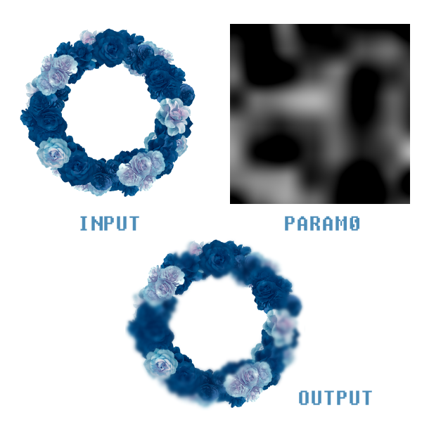

Filter system
Before reading, please make sure you update PixelsWorld to
v3.6.0+
Filter system is a kind of encapsulation of quad shader, it allows you to build post-processing shader fast.
By reading this section, you will learn how to use Filter system in PixelsWorld.
Create a filter
Call newFilter(glslCode) to create a filter program.
- Return: a random integer that represents the filter. (filterID)
glslCode will be inserted into the following context:
glslcode_context.glsl
#version 330 core
in vec2 uv;
out vec4 outColor;
// Your glslCode here!
Example
Note: In lua, we use
[[...]]to quote a multiple-line-string.
newFilter.lua
version3()
filterID = newFilter([[
void main(){
outColor = vec4(uv,0,1);
}
]])
Run a filter
Call runFilter(filterID) to run a filter program.
Example
runFilter.lua
version3()
filterID = newFilter([[
void main(){
outColor = vec4(uv,0,1);
}
]])
runFilter(filterID)
Delete a filter
Call delFilter(filterID) to delete a filter.
Normally, you don't have to delete filters. PixelsWorld deletes all filters at the end of every frame automatically. However, it's still a nice habit to delete filters by hand when it's not in used.
Example
delFilter.lua
version3()
filterID = newFilter([[
void main(){
outColor = vec4(uv,0,1);
}
]])
delFilter(filterID)
Set uniforms of filter
Call setFilterUniform(filterID, uniformType, uniformName, data0, data1, data2, ...) to set the value of uniform data.
filterID: Id of the filter.uniformType: A string that represents the data type. It can be 1d-data ("int","float","bool"), vectors ("vec2","vec3","vec4","ivec2"...), matrices ("mat2, mat4x3, ..."), or texture ("sampler2D")uniformName: Name of the data you want to set.data0,data1,...: Float data. (See example)
Example
setFilterUniform.lua
version3()
filterID = newFilter([[
uniform float myfloat;
uniform vec2 myvec;
uniform mat3x2 mymat;
uniform sampler2D mytex1;
void main(){
outColor = vec4(myfloat,myvec[0],mymat[0][1],1) + texture(mytex1,uv);
}
]])
setFilterUniform(filterID, "float", "myfloat", math.sin(time)*0.5 + 0.5)
setFilterUniform(filterID, "vec2", "myvec", 1,2)
-- Column major, namely mymat[0][0]==1, mymat[0][1]==slider(0), mymat[0][2]==2, mymat[1][0]==3, ...
setFilterUniform(filterID, "mat3x2", "mymat", 1, slider(0), 2, 3, 4, 5)
-- Use INPUT texture as mytex1
setFilterUniform(filterID, "sampler2D", "mytex1", INPUT)
-- ** You can also set the texture you created as mytex1 **
-- myInputTexID = newTex(512,256)
-- setFilterUniform(filterID, "sampler2D", "mytex1", myInputTexID)
runFilter(filterID)
Set output texture
Call setFilterDrawto(filterID, texID) to specify the output texture the result will be written. About texID, see also: Texture system
The default Drawto is
OUTPUT
You can even apply a filter iteratively to a texture.
See also: Advanced application
Create a filter module
Call newFilterModule(glslCode) to create a filter module.
- Return: A table contains filterID and some utility functions.
The main usage of the filter module is to simplify your code.
Normally, if you don't use the filter module, you should create and apply a filter in this way:
no_module.lua
version3()
filterID = newFilter([[
uniform float myfloat;
void main(){
outColor = vec4(myfloat,0,0,1);
}
]])
setFilterUniform(filterID, "float", "myfloat", math.sin(time)*0.5 + 0.5)
setFilterDrawto(filterID, OUTPUT)
runFilter(filterID)
delFilter(filterID)
Things will be easier if you use the filter module.
no_module.lua
version3()
filter = newFilterModule([[
uniform float myfloat;
void main(){
outColor = vec4(myfloat,0,0,1);
}
]])
filter.set("float", "myfloat", math.sin(time)*0.5 + 0.5)
filter.drawto(OUTPUT)
filter.run()
filter.del()
Advanced application
Here is a example of the famous channel blur effect.
slider 0: Blur intensity.layer 0: Blur mask layer.

iterateFilter.lua
version3()
-- Create a temp texture
tempTexID = newTex(width,height)
-- Copy input to temp texture
castTex(tempTexID, INPUT)
-- Blur code
blurGLSLCode = [[
uniform sampler2D in_tex;
uniform mat3 kernel;
uniform vec2 resolution;
void main()
{
vec2 xy = resolution * uv;
vec4 res = vec4(0,0,0,0);
for(int x = 0; x < 3; x++)
{
for(int y = 0; y < 3; y++)
{
vec2 curxy = xy + vec2(x-1,y-1);
res += texture(in_tex,curxy/resolution) * kernel[x][y];
}
}
outColor = res;
}
]]
-- Combine code
combineGLSLCode = [[
uniform sampler2D images[4];
uniform sampler2D masktex;
uniform mat2 uvcoord;
void main()
{
vec2 newuv = floor(uvcoord * uv * 128);
float maskv = clamp(texture(masktex, uv).r,0,1);
int maski = int(floor(maskv * images.length()));
float maskw = fract(maskv * images.length());
if(maski == images.length) maski--;
vec4 c1 = texture(images[maski], uv);
vec4 c2 = c1;
if(maski+1<images.length)
c2 = texture(images[maski+1], uv);
outColor = mix(c1, c2, maskw);
}
]]
blurFilter = newFilterModule(blurGLSLCode)
-- Set the kernel data of 3x3 gaussian blur
-- The data can be found at https://en.wikipedia.org/wiki/Kernel_(image_processing)
blurFilter.set("mat3", "kernel",
1.0/16, 2.0/16, 1.0/16, -- kernel[0][0], kernel[0][1], kernel[0][2]
2.0/16, 4.0/16, 2.0/16, -- kernel[1][0], kernel[1][1], kernel[1][2]
1.0/16, 2.0/16, 1.0/16) -- kernel[2][0], kernel[2][1], kernel[2][2]
blurFilter.set("vec2", "resolution", width, height)
-- Set temp texture as in_tex
blurFilter.set("sampler2D", "in_tex", tempTexID)
-- Set the temp texture as the Drawto
blurFilter.drawto(tempTexID)
middleResultTex = {}
for i=1,3 do
middleResultTex[i] = newTex(width,height)
end
-- blur power
substep = slider(0)
-- Iterate filter 3*substep times
for i=1,3*substep do
blurFilter.run()
if i % substep == 0 then
castTex(middleResultTex[i//substep], tempTexID)
end
end
combineFilter = newFilterModule(combineGLSLCode)
combineFilter.set("sampler2D", "images",
INPUT,
middleResultTex[1],
middleResultTex[2],
middleResultTex[3]
)
combineFilter.set("sampler2D", "masktex", PARAM0)
combineFilter.drawto(OUTPUT)
combineFilter.run()